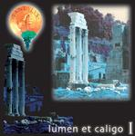

| Artist: | Tantalus |
| Title: | Lumen Et Caligo I |
| Label: | Headline HDL511 |
| Length(s): | minutes |
| Year(s) of release: | 2002 |
| Month of review: | [12/2002] |
| 1) | While There's Still Time | 8.35 |
| 2) | Eyes | 6.50 |
| 3) | Raining On The Parade | 8.18 |
| 4) | Harp Dance/Dig The Sod | 7.06 |
| 5) | Finger Painting | 7.25 |
| 6) | On Dr. Syntax's Head 5.36 | |
| 7) | Shhhhhh! We're Sleeping | 2.46 |
| 8) | Route Thirty Six Part Two | 9.38 |
| 9) | Dancing On Eggshells 6.28 | |
| 10) | Hearts 'n' Minds | 4.27 |
| 11) | Black Dream 6.09 |
Eyes opens with organ. This a rather catchy track, more eighties pop (I am reminded of A Flock Of Seagulls for instance) in some ways than progressive. There are also links to Hogarth-era Marillion, but the music is lighter. Again, the vocal melody is good, the music is rather full. The total of it amounts to something which sounds quite modern (especially in the rhythms) and very English, mainly because of the vocals. There is a sadness in the chorus. The instrumental intermezzo features some particularly sharp and harsh guitar playing. The guitar winds the song down.
Next up is Raining On The Parade in which the hammered keyboards return. We are, one might say, back in progressive rock. Quick runs on guitar and keyboards, sizzly with some dancing piano added on, we are in for a long intro. The vocal part is by contrast quite still. I am thinking of Big Big Train here, but with the vocal lines being more apparent. They do share the same mood though. The chorus is more up-beat, but also a bit on the light side. Then the music breaks into something more bluesy with long guitar leads. Piano and vocals return then, repeating the earlier lyrics. Then the music picks up pace with combined piano and guitar lead, I am tempted to think of Landmarq here. The song has plenty of energy at this point. After a crescendo and a bang we move right into the first instrumental.
Harp Dance/Dig The Sod opens with some folky snare instrument and recorder (I think). All very melodic and peaceful. But a bit sharp on the ears that recorder. All in all a pleasant sounding track with a strong melodic and mellow guitar solo halfway. Think Camel and Mostly Autumn here. Later on the music becomes a bit bubbly with the keyboards, the flute stays. The following acoustic guitar passage has a medieval sound. Kind of like a jig, but without the merriness.
Fingerpainting is a slowly progressing somewhat plodding track, in which you may hear echoes from the gold old english neo bands, Abel Ganz for instance, but with some newer elements added. Especially the more updated drum sound, is akin to what Galahad has been doing lately. If you are looking for variation, there is not much here, this song more depends on the repetitiveness and the outbursts with dancing keyboards/organs. The overall mood is a slow and plodding one. After some sharp white noise we move into the dark On Dr Syntax's Head. The organ and rhythm section make sure we have slow, plodding atmosphere here. Notwithstanding the song also has some keyboard passages interjected almost randomly into the song. The song also features a rather active guitar solo, after which the pace comes in again with some nice sharp guitar parts. Then we plunge back into the full organ sound. I am reminded of Fruitcake here, although the music is a bit more catchy, especially during the chanted chorus line.
Time for a bit of quiet with the short acoustic Shhhhh! We're Sleeping. Not so interesting this one, but it is nice for a change. Route Thirty Six Part Two (Where is one?) opens with some sharp guitar lines, after which the percussive bounce comes in. Again, the music is very much in neo-progressive style, but is certainly not boring. Check out the greta guitar playing around the two and a half minute mark. Here the song really gets going with some overpowering soloing, while the acoustic guitars strum on. The break which is next up, does not come off as well as it could in my opinion. I mean it comes out very unnatural. The following keyboard sequence reminds me strongly of an early UK song, In The Dead Of Night. The power does not let off much here as the soaring guitar return with a vengeance and the drummer pounding with a groove. After a short folky intermezzo on acoustics, the electric sets back in, but the music continues to be rather jig like and not as appealling. Then the music dies down almost completely and we have only a lone guitar line on somber synths. Then in Gilmour style, the guitar cries out.
Dancing On Eggshells is a catchy tune, with an appealing melody and one which easily sticks in your mind. The song also has a pacey electric guitar solo, for the remainder this is a rather up-beat affair with plenty of organ. I guess the band which comes closest to them is Big Big Train, although Tantalus overall seems to be more gutsy, more dynamic. But maybe the main reason for me thinking of Big Big Train is also the somewhat similar vocal style, although the vocalist of Tantalus is less careful.
On Hearts 'n' Minds we open piano and washes of strumming acoustic. Essentially, this is kind of a singalong track, something that Mostly Autumn might construct, although maybe a bit more catchy even. The rather down sounding vocals remind earlier of Floyd, though.
Black Dream is in fact a song from the seventies and was written by Nick James. I am not that fond of the chorus, but the verses have a nice atmosphere.